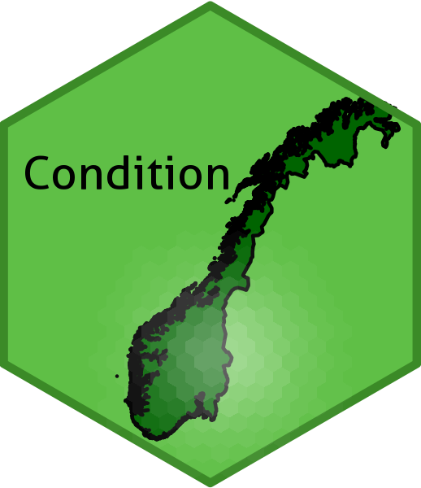

About 
On this site you may view the nitty gritty details for how certain indicators for ecosystem condition for Norway has been calculated.
The web page is made to document the work related to a R&D project to develop indicators for ecosystem condition for three main ecosystems in Norway: wetlands, open areas below the forest line, and semi-natural land. These indicators are not yet used in real assessments, and may represent unfinished work pending future data availability. In addition, we may chose to also present some analyses documenting indicators that are used in existing assessments of ecosystem condition.
Author guidelines
This project uses a type of standardised reporting where reproducible workflows (typically code) for calculating each indicator is presented on separate webpages within a shared website. The website is built from the GitHub repo using seperate RMarkdown files for each chapter. These files must be in English. The process of authoring and sharing/distributing these Rmarkdown-files is explained below.
It is highly encouraged that the indicators are delivered as georeferenced maps, hereafter called indicator maps, and not a simple tables. There is a common structure that all indicator maps should follow. The indicator maps can be vector formats raster formats. For vector data, .Rdata or .rds files can be used, as for example shape files do not allow field names (i.e. column names) that are as long as the ones we use. All georeferenced data should use EPSG:25833 - ETRS89 / UTM zone 33N.
Indicator maps should have the highest possible spatial resolution possible but weighing this against the need for spatial representativity. For example, you may need to aggregate x number of data points to get an average which is stable and representative for a given region. There is no need to spatially aggregate indicator maps any further, for example to produce a national estimate.
The indicator values, reference values ect should be mapped to the following columns (vector data) or bands (raster data):
-
v_YYYY for variable value (i.e. un-scaled or raw indicator values) for year YYYY.
-
sd_YYYY for the standard deviation associated with v_YYYY. Other measures for uncertainty is currently not supported.
-
referance_high for the reference value, i.e. the value of the variable v under reference conditions. This value cannot vary between years.
-
referance_low for the lower limit reference value, i.e. the worst possible value of the variable v. This value cannot vary between years. If missing, this value is assumed to be zero.
-
thr for the threshold value defining good condition for variable v. If missing, this value will default to 0.6.
-
i_YYYY for the indicator value at year YYYY. This value depends on all the above values, but also the scaling function (.e. linear, exponential, two-sided, ect.). The scaling function needs to be presented in other documentation.
The rest of the workflow is as follows.
- Obtain a go ahead signal from the coordination group to make sure you are free to start your work
- Read the
template.Rmd file. Make a copy of it and store it, in the same (root) folder as DRAFT_myIndicator.Rmd. (For an example, see DRAFT_breareal.Rmd). Finish your documentation and analyses there.
- You can load data from internal NINA servers, from web hosts, of store smaller data set under
data. The data folder also contains some supporting data sets that you may want to use, such as a delineation of the five regions used in the ecosystem assessment (data/regions.shp), and an outline of Norway (outlineOfNorway_EPSG25833.shp).
- To preview you rmarkdown file as html in R, type
rmarkdown::render('DRAFT_myIndicator.Rmd', output_format = "html_document", output_dir = "temp") in the console (the knitr shortcuts don’t work as expected inside bookdown projects).
- When filling out the template.Rmd file with your own work, try not to change the headers too much.
- Final result from the analyses should be written to the
indicators folder. The preferred output is georeferenced data (rasters or shape files), and these should be placed under indators/indicatorMaps. Non-georeferenced data, like data tables, can be stored under indicators.
- Make a pull request to the main GitHub repository to submit your file. If you are not comfortable using GitHub, contac Anders to rrange sending the files via email.
- Anders or someone else in the project wil conduct a rapid code review, making sure the code is reproducible, interpretable and that it renders locally on the R Studio server.
- When approved, the reviewer will make a copy of the DRAFT_ file, removing the DRAFT_ part of the name, as well as the YML header, and as well as updating the rmd_files part of _bookdown.yml. (For an example of such a file, see
breareal.Rmd.)
- To update the web site (this web site), an admin user needs to pull down the repo to R Studio server, compile the book there (Ctr+Shift+B), commit and push to main. The html version of the book will be in the
docs folder.